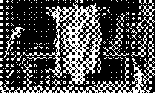

~/ click me.
The WorldWideWeb (W3) is a wide-area hypermedia information retrieval initiative aiming to give universal access to a large universe of documents.

Hypertext is text which is not constrained to be linear.
Hypertext is text which contains links to other texts. The term was coined by Ted Nelson around 1965.
HyperMedia is a term used for hypertext which is not constrained to be text: it can include graphics, video and sound. Apparently Ted Nelson was the first to use this term too.
Hypertext and HyperMedia are concepts, not products.
Text from CERN. Painting is “Deus Absconditus” by Michael Triegel.